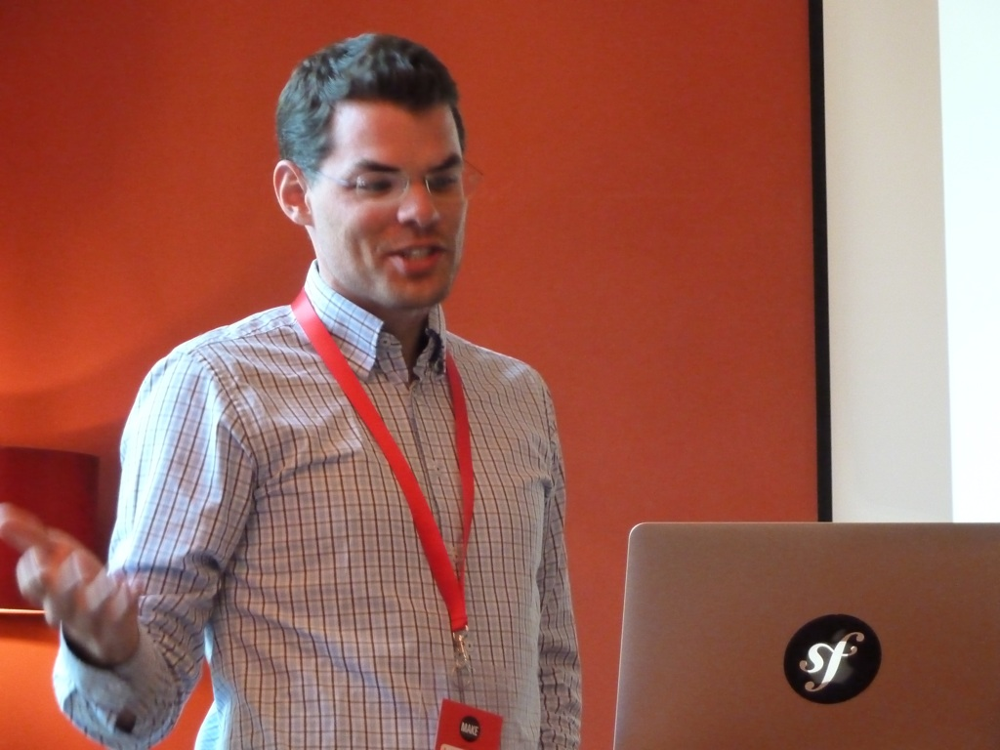
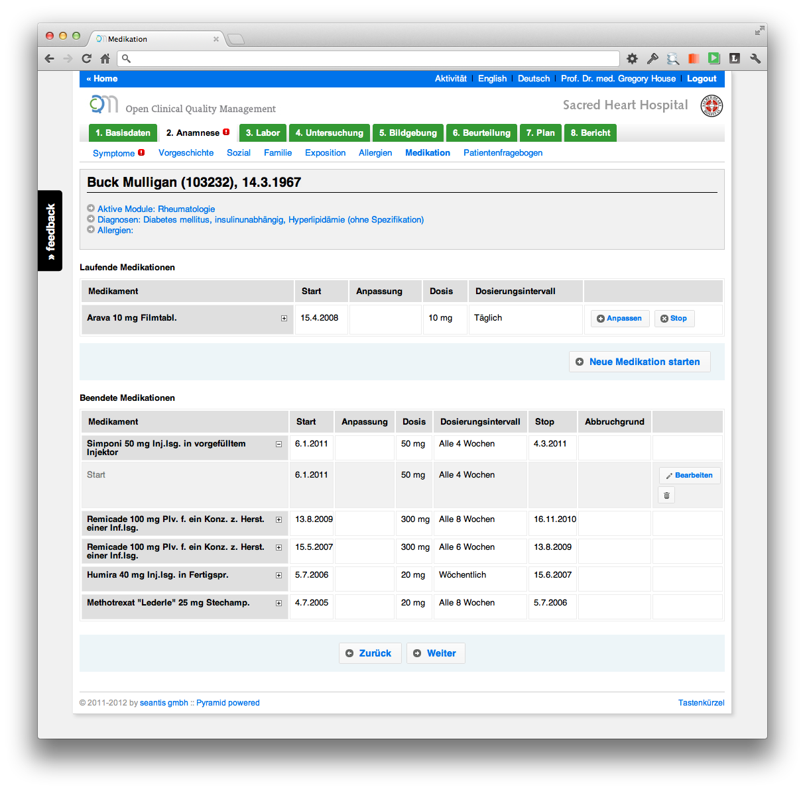

Blog
healthinsurance.opendata.ch
Am Swiss Open Data Hackday dieses Wochenende in Basel haben wir innerhalb von nur zwei Tagen eine interaktive Karte mit allen Krankenkassenprämien der Schweiz entwickelt.
Die interaktive Karte ist leider nicht mehr online verfügbar.
Ein Audio-Live-Mitschnitt der Schlusspräsentation ist auch verfügbar (http://infam.antville.org/stories/2137823)

Impressionen von "Open Data"-Enthusiasten beim Hacken: http://www.flickr.com/photos/ph64/sets/72157631649312225

Visualiserung der Krankenkassenprämien
Nachdem wir den Prämiendatensatz vom BAG erhalten haben und diesen mittels einem kleinen Tool (SHIP) in eine Datenbank gebracht haben, sind wir nun dabei die Prämiendaten zu visualisieren. Es ist allgemein bekannt, dass die Prämienunterschiede zwischen einzelnen Kantonen sehr gross sind.

Wir möchten die Daten auf einer interaktiven Karte darzustellen, so dass sich regionale Unterschiede einfach erkennen lassen. Für die Karte sollen sich dann dynamische Filter setzen lassen. Interessant könnten hier gewisse "Kovariablen" wie Ärzte- oder Spitaldichte sein. Auch die Entwicklung über Zeit ist sicherlich nicht uninteressant.

Für die interaktive Karten-App bauen wir auf die Applikation "Swiss Train Flows", welche am letzten Swiss Open Data Hackday in Zürich entstanden ist.
Im Team "SHIP" Swiss Open Data Hackday:
- Denis Krienbühl (https://github.com/href)
- Colin Frei (https://github.com/colinfrei)
- Patrick Staehlin (https://github.com/packi)
- Oliver Egger (https://github.com/oliveregger)
- Fabian Reinhard (https://github.com/freinhard)
Last but not least das GitHub Repository: https://github.com/seantis/ship
#
Stand der Arbeiten
Update FR 28.09.2012 17:30: Kantonsgrenzen auf die Karte zeichnen mit GeoJSON

Update FR 28.09.2012 18:48: Wir werden definitiv ein schönes Farbschema brauchen! Hier ein verdammt schönes Beispiel von http://mbostock.github.com/d3/talk/20111018/choropleth.html

Update FR 28.09.2012 19:24: Ich habe gerade die kleine Python Webapp auf meinem Notebook installiert:
- Die Karte wird geladen
- Die Kantonsgrenzen sehr ordentlich eingezeichnet!

Update FR 28.09.2012 19:46: Wir haben erste Farben! Wow!!

Update FR 28.09.2012 21:02: Wie visualisieren wir die Ärztedichte pro Kanton?

Update SA 29.09.2012 10:15: Tag zwei der Hackdays. Wir haben nun neue Farben mit mehr Bedeutung: rot = über den CH-Durchschnitt / grün = unter dem CH- Durchschnit

Die ärztliche Handschrift und Dokumentationsfehler

Eine Studie über den Verschreibungsprozess auf einer Station des Universitätsspitals Bern kam zum Schluss, dass Verschreibungsfehler wegen fehlender oder zweideutiger Angaben des Arztes häufig sind [http://www.nzz.ch/aktuell/schweiz/die-handschrift-der-halbgoetter-in- weiss-1.12848707].
Unter folgenden Bedingungen sind Fehler bei der Medikamentenabgabe wahrscheinlicher:
- die Schrift der Verschreibung ist unleserlich
- die Angaben des Arztes sind unvollständig (es fehlen z.B. Informationen zur Dosis eines Medikaments)
- die Verschreibung enthält widersprüchliche Angaben
Aus diesen Gründen empfiehlt es sich, handschriftliche Dokumentationsprozesse durch elektronische Systeme zu ersetzen.
Mit OCQMS entwickeln wir eine modulare webbasierte Software für ein "Clinical Quality Management System". Das System unterstützt den praktizierenden Arzt in seiner täglichen klinischen Arbeit (automatische Generierung von ärztlichen Berichten) und stellt dabei eine strukturierte Ablage der Daten sicher.

Dabei werden nicht nur medikamentöse Verschreibungen, sondern der gesamte Dokumentationsprozess in einem wohlstruktutrierten elektronischen System abgebildet.
OCQMS legt zudem grossen Wert auf eine geeignete Visualisierung der Daten, so dass sich Fehler oder Inkonsistenzen (z.B. bei der Medikation) leichter erkennen lassen.

Die erfassten Daten werden dank Report Generator als Textbausteine bzw. tabellarische Darstellung in den ärztlichen Bericht (Arztbrief) übertragen.

Gefährliche Fehler aufgrund einer unleserlichen Handschrift können so komplett vermieden werden.

SHIP - Swiss Healthcare Insurance Premiums
Im Rahmen der leidigen Diskussion um den mutmasslichen "Hackerangriff" (http://www.nzz.ch/aktuell/schweiz/bund-liess-comparis-hackerangriff- durchgehen-1.17547910) von Camparis (www.comparis.ch) auf den Prämienrechner des Bundesamts für Gesundheit (www.priminfo.ch) haben wir uns gefragt, wie offen die Prämien-Daten des BAGs verfügbar sind.
Wir haben also beim BAG nachgefragt und erhielten sehr prompt eine Antwort inkl. Link auf den Datensatz mit allen Prämien: http://www.bag.admin.ch/themen/krankenversicherung/01156/02446/index.html?lang=de
Vielen Dank und chapeaux BAG!
Der Datensatz des BAG liegt im Excel-Format vor und ist daher nicht ganz so einfach zu verarbeiten. Wir haben daher noch einmal beim BAG nachgefragt, ob die Daten auch in "Rohkost" verfügbar sind. Das BAG war wiederum sehr hilfsbereit und hat uns Daten sogleich im CSV-Format zu kommen lassen.
Mit diesem Datensatz war es uns einfach möglich, ein kleines Tool für die Prämiendaten zu entwickeln. SHIP (Swiss Healthcare Insurance Premiums) bietet im jetzigen Stadium folgende Funktionalität:
- Einlesen der Prämiendaten in eine beliebige SQL-Datenbank
- Verständliche Feldnamen
- Einfache Abfragen auf die Datenbank
Das Ziel wäre, für die Datenbank eine öffentliche API zu entwickeln.
Wir sind beim Swiss Open Data Hackday zum Thema Health (http://make.opendata.ch) dabei und hoffen da gemeinsam mit anderen die Arbeiten an der API vorantreiben zu können.
Um den unmittelbaren Nutzen der API zu zeigen, könnte man eine kleine Website mit einem Formular zur Prämienabfrage bauen. Auch wäre es möglich, die über die API gewonnenen Daten zu visualisieren.
Idealerweise würde durch die API ein ganz neuer Möglichkeitsraum geöffnet und es entstünden Applikationen, an die wir selbst nie gedacht hätten.
SHIP - Swiss Healthcare Insurance Premiums auf GitHub: https://github.com/seantis/ship

PDFresult of ipython notebook example:
https://github.com/seantis/ship/blob/master/docs/examples.pdf?raw=true
Artikel über die OneGov Box in der «eGov Präsenz»
Der Verein OneGov.ch steht exemplarisch für den in der Strategie E-Government des Bundes geforderten Grundsatz «Einmal entwickeln – mehrfach nutzen». Die Mitglieder des Vereins – Kunden und Hersteller – stellen gemeinsam ein durchgängiges E-Government-System zur Verfügung, das dem föderalistischen Prinzip der Eigenständigkeit von Gemeinden und Kantonen Rechnung trägt, eine hohe Wiederverwendbarkeit garantiert und bedarfsgerecht weiterentwickelt wird. Die kundenorientierten Lösungen sind streng modular aufgebaut und individuell konfigurierbar.
Ein einmal im Auftrag eines Kunden entwickeltes Modul – zum Beispiel ein Veranstaltungskalender, ein Reservationssystem oder eine Auftragsbox – wird von OneGov.ch zertifiziert und lässt sich danach von allen Mitgliedern einsetzen. Die Kunden teilen so den Entwicklungs- und Pflegeaufwand. Und als Nutzergemeinschaft bietet OneGov.ch seinen Kunden weit mehr als bloss ein Produkt.
- Website «eGov Präsenz»: www.wirtschaft.bfh.ch/de/forschung/publikationen/egov_praesenz.html
- Artikel als PDF herunterladen